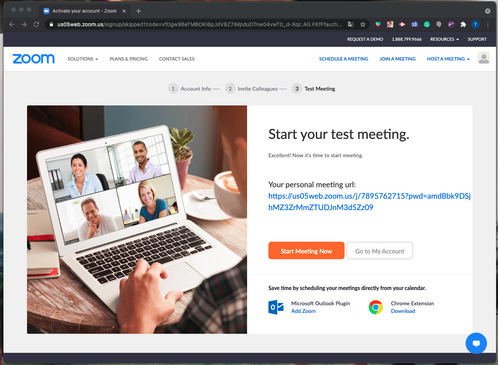

Zoom
¿Qué es Zoom?
Zoom es una herramienta que se utiliza para videollamadas. Esto permite que grupos grandes se vean a través de un video, se comuniquen y compartan pantallas, todo desde sus hogares.
Registrate en Zoom
Vaya a zoom.us/signup
Paso 2: Se le pedirá que ingrese su fecha de nacimiento. A menos que sea mayor de 16 años, no es elegible para crear una cuenta a menos que sea para la escuela. A continuación, se le presentarán las opciones para registrarse. Ingrese su correo electrónico del trabajo / escuela (el personal también funciona bien) También puede crear una cuenta presionando 'iniciar sesión con (Google, Facebook)'. Si elige esta opción, vaya por abajo Si ingresó su dirección de correo electrónico, zoom enviará un correo electrónico a su cuenta. Haga clic en el botón que dice 'activar cuenta'

Se abrirá una página en su navegador web que le preguntará si se está registrando en nombre de la escuela. Contesta sí o no. A partir de ahí, ingrese su apellido y la contraseña deseada para Zoom.

Se le preguntará si desea invitar a otras personas a unirse a Zoom. Puede omitir esa página o invitar a otros.
Finalmente, se le dará la URL de su reunión personal y tendrá la opción de hacer clic en un botón que dice "comenzar la reunión ahora". Si hace clic en el botón, se le pedirá que descargue la aplicación de escritorio Zoom.
Bajando a Zoom
Vaya a zoom.us/download. Esto lo llevará a una página con opciones de descarga. Haga clic en el botón de descarga debajo de 'Cliente de Zoom Para Juntas'
Si hace clic en la descarga en la parte inferior de su página web, abrirá una ventana emergente. Haga clic en 'continuar', el destino (generalmente 'solo para este usuario'), luego 'instalar'. ¡Felicidades! Has instalado Zoom
Organizando Una Junta
Es posible organizar una reunión de Zoom si ha descargado la aplicación. Si no lo hace, vaya a la sección anterior y siga los pasos. Abra la aplicación en su computadora e inicie sesión en su cuenta. Haga clic en la flecha hacia abajo en la sección 'iniciar reunión'. (Es un botón naranja) Marque 'comenzar con video' y 'usar mi identificación de reunión personal' y luego envíe la identificación a aquellos que desee en el Zoom.
Uniéndose a una Junta
Al unirse a una reunión, lo más probable es que el anfitrión le envíe un enlace o un código Cuando sea el momento de unirse a la llamada, haga clic en el enlace. Se unirá automáticamente a la llamada o se le colocará en una sala de espera, donde esperará a que el anfitrión le deje entrar.
Si te envían un código, abre la aplicación de zoom. Haga clic en el botón que dice 'unirse a la reunión' e ingrese el código que se le proporcionó. También puede escribir su nombre en el que se mostrará al unirse a la llamada.
Apagando y Encendiendo tu Micrófono y Cámara
En la parte inferior de la pantalla de una llamada, hay varias opciones. Dos de ellos son el micrófono y el video. Una es una imagen de un micrófono y la otra es una cámara que dice "video" debajo. Para apagar su video, haga clic en el botón que dice video. De esta manera, nadie podrá verte. Si desea volver a encenderlo, vuelva a hacer clic en él. Para que la gente no pueda escucharte, haz clic en el botón del micrófono. Para volver a encenderlo, haz clic en él nuevamente.

Retoque Facial
Abra la aplicación Zoom y haga clic en el engranaje pequeño en la esquina superior derecha (configuración) Se abrirá una pantalla con diferentes opciones. Haga clic en la sección titulada 'video'. Estas son configuraciones que editarán el video tuyo que otros ven.
Una función útil de esta sección es que obtiene una vista previa de su video. Esto puede ser bueno para ver antes de unirse a una llamada. En la imagen donde hay una caricatura es donde aparecerá tu video.
En la sección titulada "mi video", puede hacer clic en "retocar mi apariencia". Esto simplemente suaviza tu rostro retocando tu video.
Grabando Tu Pantalla
Una vez que esté en una reunión, hay una opción en la parte inferior de la pantalla que dice 'grabar' Una vez que presione este botón, comenzará a grabar todo lo que está sucediendo en la reunión. En la esquina superior izquierda, hay una opción que le permitirá pausar / detener y reiniciar el video. Todo lo que tienes que hacer es presionar el símbolo de pausa / reproducción. Después de la llamada, el video se descargará automáticamente a su computadora y también será visible en la pestaña 'grabaciones' de su aplicación de zoom.

Compartiendo Tu Pantalla
En la parte inferior hay una opción que dice "compartir pantalla". Si eres el anfitrión, automáticamente tendrás la opción. De lo contrario, el anfitrión tiene que darte permiso para compartir tu pantalla.
Pulsa el botón que dice "compartir pantalla". Al anfitrión se le ofrecerán opciones como permitir que solo una persona comparta la pantalla, etc. A continuación, se abrirá una ventana que le preguntará qué desea compartir. Algunas de las opciones son su escritorio, aplicaciones que tiene abiertas (como Chrome, Safari), una pizarra, etc. Haga clic en una de estas. Una vez que haya elegido lo que desea compartir, haga clic en el botón que dice "compartir" en la esquina inferior derecha. Para iniciar una pantalla compartida, escriba ⌘Cmd + Shift + S (PC: Alt + Shift + S). Para pausar / reanudar una pantalla compartida, escribe ⌘Cmd + Shift + T (PC: Alt + T).